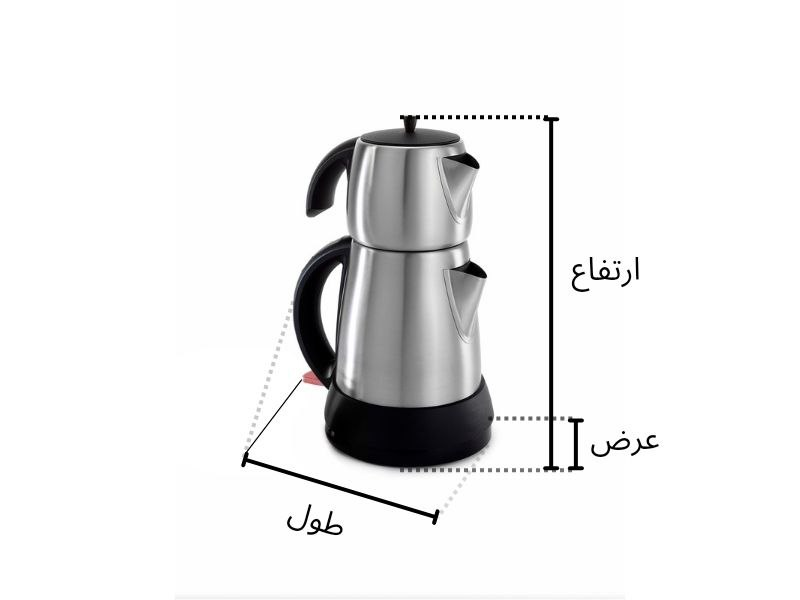

📏 (ارتفاع × عرض × طول)
نکته مهم در نوشتن ابعاد: بین طول و عرض، عدد بزرگتر را به عنوان طول در نظر بگیرید. ارتفاع همیشه در آخر نوشته میشود.
مثال:(30 * 25 * 45) ← 45 طول، 25 عرض، 30 ارتفاع
📐 روش صحیح اندازهگیری:
۱. ابتدا طول، عرض و ارتفاع محصول خود را با دقت اندازه بگیرید.
۲. با توجه به نوع کارتن (سه لایه یا پنج لایه)، بین 0.5 تا 1 سانتیمتر به هر طرف ابعاد اضافه کنید.
۳. عدد نهایی = اندازه دقیق جعبه مورد نیاز شما.
💡 نکته فنی: گاهی با جابجایی ابعاد (جای عرض و طول) میتوانید قیمت تمام شده را کاهش دهید. برای مشاوره با ما تماس بگیرید.